BMW Modele
DESCOPERĂ MARCA BMW
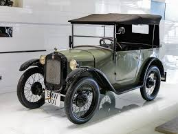
Povestea BMW a început, în mod surprinzător, nu pe șosele, ci în aer. Compania a luat naștere în 1916, în timpul Primului Război Mondial, prin fuziunea producătorilor de motoare de avioane Rapp Motorenwerke și Gustav Otto Flugmaschinenfabrik, operând inițial sub numele de Bayerische Flugzeugwerke (BFW) înainte de a deveni Bayerische Motoren Werke (BMW) în 1917. După Tratatul de la Versailles, care a interzis Germaniei producția de motoare pentru aeronave, firma a fost forțată să se reinventeze pentru a supraviețui: a început cu frâne de tren și motoare mici, a lansat prima motocicletă, R32, în 1923, și abia în 1928 a intrat în lumea auto prin achiziția fabricii din Eisenach. Primul lor automobil, Dixi 3/15, a marcat începutul unei transformări remarcabile dintr-un producător de motoare de aviație într-un simbol global al luxului și performanței auto.
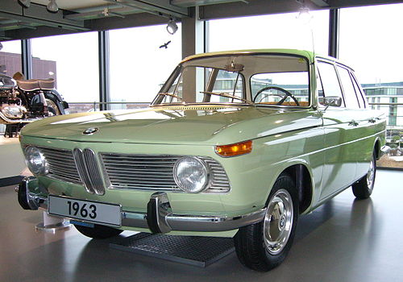
În 1959, BMW se afla în pragul falimentului din cauza unei game de produse neprofitabile și a prăbușirii pieței de motociclete. O tentativă de fuziune cu Daimler-Benz a fost blocată în ultimul moment de micii acționari și dealeri, moment în care familia Quandt a preluat controlul, devenind principalul investitor. Salvarea financiară a venit prin proiectul „Neue Klasse” (1962), o serie de sedanuri sportive care au definit noua identitate de brand și au readus profitabilitatea. Ulterior, în 1966, BMW și-a extins capacitățile și expertiza tehnică prin achiziția companiei Hans Glas, consolidându-și astfel poziția pe piață și accesul la ingineri înalt calificați.
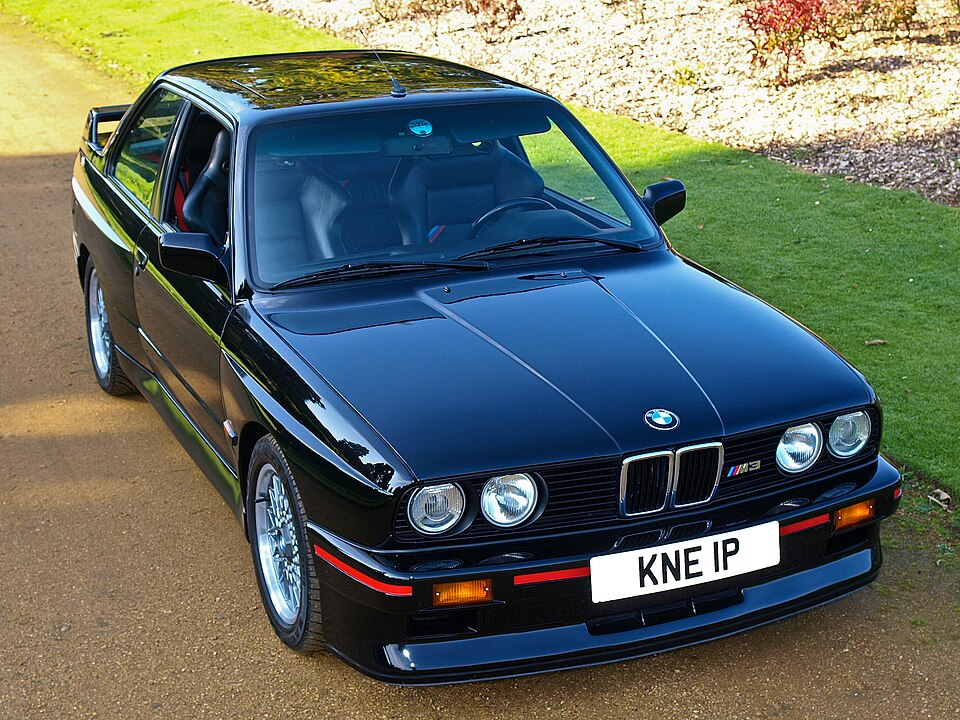
După succesul salvator al „Noii Clase”, BMW a intrat într-o eră de expansiune accelerată, definindu-și arhitectura portofoliului pe care o cunoaștem și astăzi. Între 1972 și 1978, compania a lansat pilonii săi fundamentali: Seria 5, Seria 3 și Seria 7, introducând totodată rafinatele motoare cu șase cilindri în linie. Această perioadă a marcat și nașterea diviziei de performanță BMW M, care a debutat spectaculos cu modelul M1, dezvoltat în colaborare cu Lamborghini, și a continuat cu primele iterații ale legendarului M3 și M5. Din punct de vedere tehnic, marca a început să exploreze noi teritorii prin introducerea primului motor diesel, a tracțiunii integrale și a motorului V12, culminând cu lansarea avangardistului coupe Seria 8 și a roadsterului Z1.
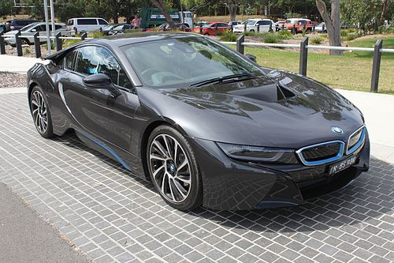
Cea de-a doua etapă a fost definită de achiziții strategice și de o adaptare curajoasă la noile cerințe ale pieței globale. Deși aventura cu grupul britanic Rover s-a încheiat cu vânzarea majorității activelor, BMW a păstrat nestemata MINI și a preluat controlul mărcii de lux Rolls-Royce. Anul 1999 a reprezentat un punct de cotitură prin lansarea modelului X5, primul SUV al mărcii, care a demonstrat că ADN-ul sportiv poate fi transpus și pe caroserii mai masive. Ulterior, sub presiunea normelor de eficiență, BMW a făcut tranziția generalizată către motoarele turbo și a creat sub-brandul BMW i, dedicat mobilității sustenabile. Această evoluție a dus la apariția inovatoarelor i3 și i8, marcând trecerea definitivă spre electrificare și diversificarea gamei în segmente noi, precum cel al tracțiunii față sau al SUV-urilor de tip coupe (X6, X4).
DESCOPERĂ MAI MULTE MODELE
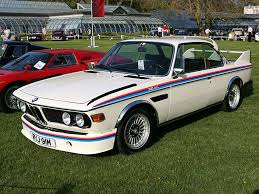
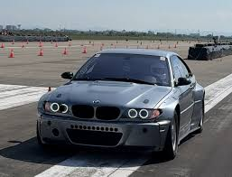
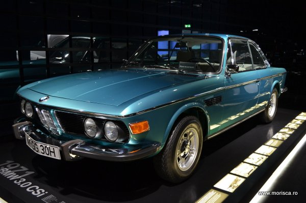
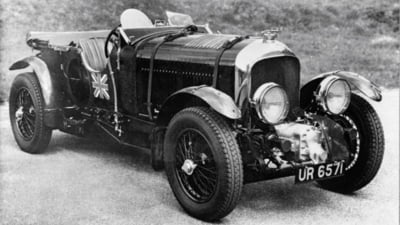
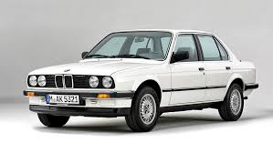
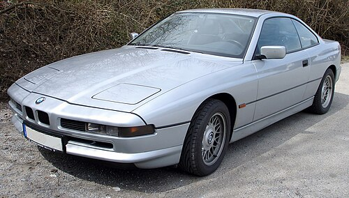
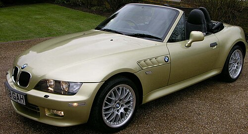
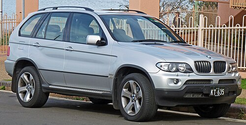